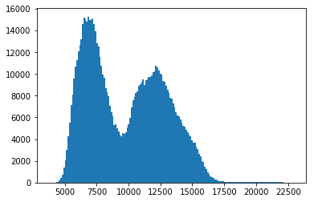

Viewing and manipulating FITS images¶
Authors¶
Lia Corrales, Kris Stern
Learning Goals¶
Learn how to open FITS files and load the image data
Learn how to visualize the image data
Learn about basic image math: image stacking
Learn how to write image data to a FITS file
Keywords¶
matplotlib, FITS image, table
Summary¶
This tutorial demonstrates the use of astropy.utils.data to download
a data file, then uses astropy.io.fits to open the file, and lastly
uses matplotlib to view the image with different color scales and
stretches and to make histograms. In this tutorial we’ve also included a
demonstration of simple image stacking.
In[1]:
import numpy as np
# Set up matplotlib
import matplotlib.pyplot as plt
%matplotlib inline
from astropy.io import fits
The following cell is needed to download the example FITS files used here.
In[2]:
from astropy.utils.data import download_file
image_file = download_file('http://data.astropy.org/tutorials/FITS-images/HorseHead.fits', cache=True )
Opening FITS files and loading the image data¶
Let’s open the FITS file to find out what it contains.
In[3]:
hdu_list = fits.open(image_file)
hdu_list.info()
Out[3]:
Filename: /home/circleci/.astropy/cache/download/py3/2c9202ae878ecfcb60878ceb63837f5f
No. Name Ver Type Cards Dimensions Format
0 PRIMARY 1 PrimaryHDU 161 (891, 893) int16
1 er.mask 1 TableHDU 25 1600R x 4C [F6.2, F6.2, F6.2, F6.2]
Generally, the image information is located in the PRIMARY block. The blocks are numbered and can be accessed by indexing hdu_list.
In[4]:
image_data = hdu_list[0].data
Our data is now stored as a 2-D numpy array. But how do we know the
dimensions of the image? We can simply look at the shape of the
array.
In[5]:
print(type(image_data))
print(image_data.shape)
Out[5]:
<class 'numpy.ndarray'>
(893, 891)
Great! At this point, we can close the FITS file because we’ve stored everything we wanted to a variable.
In[6]:
hdu_list.close()
SHORTCUT¶
If you don’t need to examine the FITS header, you can call
fits.getdata to bypass the previous steps.
In[7]:
image_data = fits.getdata(image_file)
print(type(image_data))
print(image_data.shape)
Out[7]:
<class 'numpy.ndarray'>
(893, 891)
Viewing the image data and getting basic statistics¶
In[8]:
plt.imshow(image_data, cmap='gray')
plt.colorbar()
# To see more color maps
# http://wiki.scipy.org/Cookbook/Matplotlib/Show_colormaps
Out[8]:
<matplotlib.colorbar.Colorbar at 0x7f50b80de850>
Let’s get some basic statistics about our image:
In[9]:
print('Min:', np.min(image_data))
print('Max:', np.max(image_data))
print('Mean:', np.mean(image_data))
print('Stdev:', np.std(image_data))
Out[9]:
Min: 3759
Max: 22918
Mean: 9831.481676287574
Stdev: 3032.3927542049046
Plotting a histogram¶
To make a histogram with matplotlib.pyplot.hist(), we’ll need to
cast the data from a 2-D array to something one dimensional.
In this case, let’s use the ndarray.flatten() to return a 1-D numpy
array.
In[10]:
print(type(image_data.flatten()))
Out[10]:
<class 'numpy.ndarray'>
In[11]:
histogram = plt.hist(image_data.flatten(), bins='auto')
Out[11]:
Displaying the image with a logarithmic scale¶
What if we want to use a logarithmic color scale? To do so, we’ll need
to load the LogNorm object from matplotlib.
In[12]:
from matplotlib.colors import LogNorm
In[13]:
plt.imshow(image_data, cmap='gray', norm=LogNorm())
# I chose the tick marks based on the histogram above
cbar = plt.colorbar(ticks=[5.e3,1.e4,2.e4])
cbar.ax.set_yticklabels(['5,000','10,000','20,000'])
Out[13]:
[Text(1, 0, '5,000'), Text(1, 0, '10,000'), Text(1, 0, '20,000')]
Basic image math: image stacking¶
You can also perform math with the image data like any other numpy array. In this particular example, we’ll stack several images of M13 taken with a ~10’’ telescope.
Let’s start by opening a series of FITS files and store the data in a
list, which we’ve named image_concat.
In[14]:
base_url = 'http://data.astropy.org/tutorials/FITS-images/M13_blue_{0:04d}.fits'
image_list = [download_file(base_url.format(n), cache=True)
for n in range(1, 5+1)]
image_concat = [fits.getdata(image) for image in image_list]
Now we’ll stack the images by summing the concatenated list.
In[15]:
# The long way
final_image = np.zeros(shape=image_concat[0].shape)
for image in image_concat:
final_image += image
# The short way
# final_image = np.sum(image_concat, axis=0)
We’re going to show the image, but need to decide on the best stretch. To do so let’s plot a histogram of the data.
In[16]:
image_hist = plt.hist(final_image.flatten(), bins='auto')
Out[16]:

We’ll use the keywords vmin and vmax to set limits on the color
scaling for imshow.
In[17]:
plt.imshow(final_image, cmap='gray', vmin=2E3, vmax=3E3)
plt.colorbar()
Out[17]:
<matplotlib.colorbar.Colorbar at 0x7f50b58b6090>
Writing image data to a FITS file¶
We can easily do this with the writeto() method.
Warning: you’ll receive an error if the file you are trying to write
already exists. That’s why we’ve set overwrite=True.
In[18]:
outfile = 'stacked_M13_blue.fits'
hdu = fits.PrimaryHDU(final_image)
hdu.writeto(outfile, overwrite=True)
Exercises¶
Determine the mean, median, and standard deviation of a part of the stacked M13 image where there is not light from M13. Use those statistics with a sum over the part of the image that includes M13 to estimate the total light in this image from M13.
In[None]:
Show the image of the Horsehead Nebula, but in units of surface brightness (magnitudes per square arcsecond). (Hint: the physical size of the image is 15x15 arcminutes.)
In[None]:
Now write out the image you just created, preserving the header the original image had, but add a keyword ‘UNITS’ with the value ‘mag per sq arcsec’. (Hint: it may be helpful to read the astropy.io.fits documentation if you’re not sure how to include both the header and the data.)
In[None]: